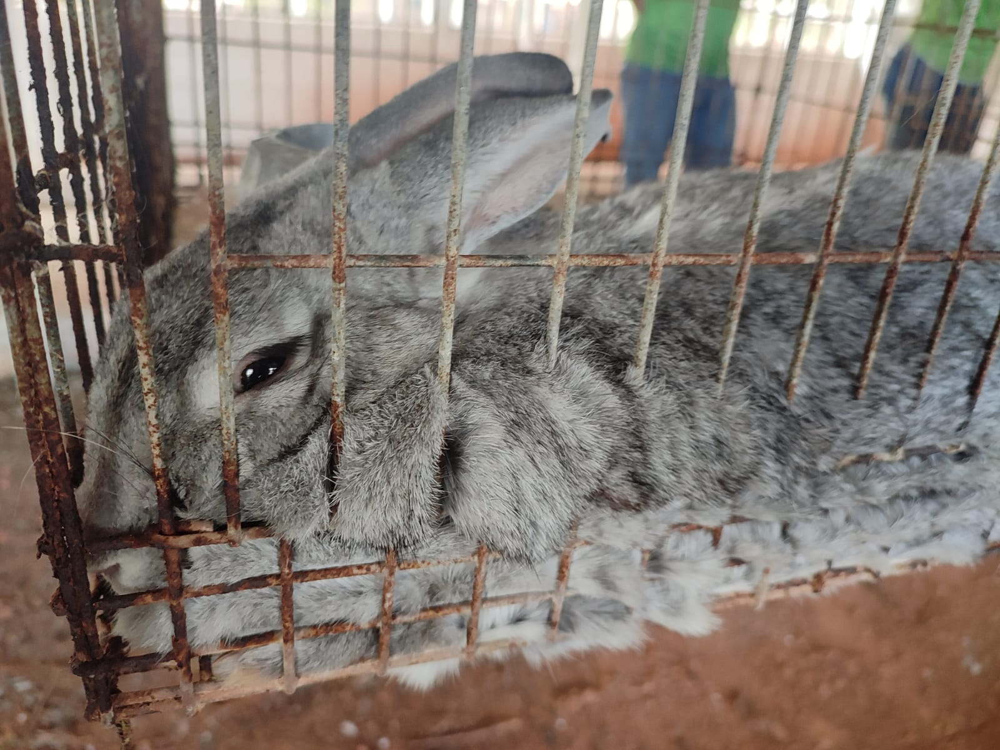

Visita Técnica - IFRO Campus Colorado D'oeste
No dia 09 de Agosto, fomos a uma visita técnica no IFRO Campus Colorado D'oeste. lá Saímos do nosso campus as 9:10 e chegamos lá as 10:15. Ao chegar fomos introduzidos ao que seria passado ao decorrer do dia e então nos direcionamos ao refeitorio para almoçar e descansar até as 12:00, onde iria ocorrer as atividades.
Tivemos uma oficina de foto para ter algo relacionado a tecnologia associado a nossa visita em um campus onde o foco principal é a agropecuária. Foram citados desafios para encontrar mídias de boa qualidade de consumo na internet. Em função disso, criaram vídeos em um canal com um conteúdo que poderia ser de ajuda para a comunidade. Foi citada a importância da tecnologia em projetos. O caminho que a tecnologia abre permite a conexão entre diversas formas de conhecimento.
Apresentaram projetos de gravação de vídeos educativos sobre determinados assuntos de ajuda para a comunidade.A parte importante para que aquilo que está sendo apresentado seja um bom conteúdo se encaixa em possuir um bom conteúdo de fácil entendimento e uma boa parte audiovisual de todo o projeto. Com o tempo os vídeos se evoluíram para podcasts e maneiras mais acessíveis de transmitir conhecimento foram aparecendo.
O surgimento do IFRO Mobile surgiu aqui no Campus Colorado para solucionar problemas de alteração de horários apenas, e assim se tornou a plataforma principal de todos os estudantes e servidores dos institutos federais. Participamos da oficina de fotografia, a qual começou com a história da fotografia e seus primeiros conceitos ao longo dos tempos.
Conhecemos os setores dos animais(bois, coelhos, galinhas, codornas, porcos) e de produção agrícola e então fomos de encontro ao ônibus para irmos embora. Saímos do campus as 16:30, e chegamos ao nosso campus as 17:40.



×
❯